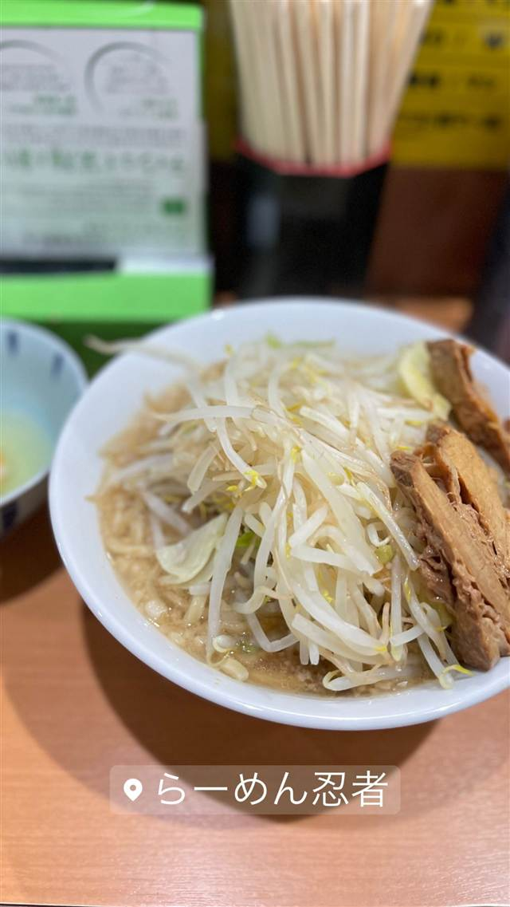

らーめん 忍者
丸豚・デカ豚・ほぐし豚、3種の豚が入る特製らーめん
らーめん忍者
秋葉原にある二郎インスパイア系ラーメン店。背脂たっぷりの豚骨醤油スープと極太ちぢれ麺、山盛り野菜が特徴で、3種の豚肉が入った特製らーめんなどボリューム満点のメニューで知られる。
TRIVIA
豆知識
- 特製らーめんには丸豚・デカ豚・ほぐし豚と3種類の豚肉が入っている
- 麺量は無料で特盛500gまで選べる
REVIEWS
世間の評判
87.8ラーメンDB3.55食べログ
ほろほろデカ豚と朝ラーの魅力
- ほろほろに柔らかく煮込まれた大きめのデカ豚を評価する声が多い
- 朝からしっかりこってりを食べられる朝ラーメンが人気という声もある
- スープがぬるかったり麺が柔らかめだったりと提供にムラを感じる人もいる
- マー油や背脂の風味が自分の好みに合わないと感じる人も見られる
ラーメンデータベース 口コミ135件・最新 2026-07
| 創業 | 2016年2月開店。 |
|---|---|
| 系譜 | 二郎インスパイア系（特定の師弟関係・系譜は未確認）。 |
| 看板 | 特製らーめん（丸豚・デカ豚・ほぐし豚の3種の豚肉と味玉入り） |
| こだわり | 豚・麺・カエシにこだわり、背脂たっぷりの濃厚な豚骨醤油スープに、シコシコとした極太ちぢれ麺、山盛りの野菜を合わせる。麺量は特盛500gまで選べ、にんにく・アブラ・カラメ・辛揚げなどの無料トッピングも可能。 |
| どこから | 都心 |
| 営業時間 | 月〜土 11:00-22:45 日 11:00-21:30 |
| 予算 | 昼 ¥1,000未満 夜 ¥1,000未満 |
| 場所 | 秋葉原駅 東京都千代田区神田松永町17-3 秋葉原妙見屋ビル1F |
| メモ | 秋葉原駅昭和通り口から徒歩2〜4分。食べログでも評価の高い人気の二郎インスパイア店。 |
食べたもの：二郎系ラーメン
NEARBY
近い店・同じ系統の店
-
 ★
家系 末広町駅
王道家直系 IEKEI TOKYO
家系四天王「王道家」の直系、東京店だけの自家製麺
昼 ～¥999 夜 ～¥999
★
家系 末広町駅
王道家直系 IEKEI TOKYO
家系四天王「王道家」の直系、東京店だけの自家製麺
昼 ～¥999 夜 ～¥999
-
 ★
二郎系(インスパイア) 新小岩駅
Hi-Fat Noodle BUTCHER'S
「脂と肉を武器にする」がコンセプトの二郎系2号店
昼 ¥1,000～¥1,999 夜 ¥1,000～¥1,999
★
二郎系(インスパイア) 新小岩駅
Hi-Fat Noodle BUTCHER'S
「脂と肉を武器にする」がコンセプトの二郎系2号店
昼 ¥1,000～¥1,999 夜 ¥1,000～¥1,999
-
 ★
二郎系(インスパイア) 高田馬場駅(早稲田口)
ラーメン 池田屋 高田馬場店
京都一乗寺発の二郎系が東京初進出、豚の旨味濃厚な一杯
昼 ¥1,000～¥1,999 夜 ¥1,000～¥1,999
★
二郎系(インスパイア) 高田馬場駅(早稲田口)
ラーメン 池田屋 高田馬場店
京都一乗寺発の二郎系が東京初進出、豚の旨味濃厚な一杯
昼 ¥1,000～¥1,999 夜 ¥1,000～¥1,999
-
 ★
二郎系(インスパイア) 東北沢駅／駒場東大前駅
千里眼（センリガン）
夏季限定の冷やし中華も人気の二郎系インスパイア
昼 ～¥999 夜 ～¥999
★
二郎系(インスパイア) 東北沢駅／駒場東大前駅
千里眼（センリガン）
夏季限定の冷やし中華も人気の二郎系インスパイア
昼 ～¥999 夜 ～¥999
-
 ★
二郎系(インスパイア) 大山
自家製麺 No11
富士丸出身の店主が繰り出す350g極太麺の二郎系
夜 ¥1,000～¥1,999
★
二郎系(インスパイア) 大山
自家製麺 No11
富士丸出身の店主が繰り出す350g極太麺の二郎系
夜 ¥1,000～¥1,999
-
 ★
二郎系(インスパイア) 東大前
ラーメン用心棒 本号
千里眼の系譜を継ぐ、濃厚豚骨醤油と極太麺のまぜそば
昼 ～¥999 夜 ¥1,000～¥1,999
★
二郎系(インスパイア) 東大前
ラーメン用心棒 本号
千里眼の系譜を継ぐ、濃厚豚骨醤油と極太麺のまぜそば
昼 ～¥999 夜 ¥1,000～¥1,999